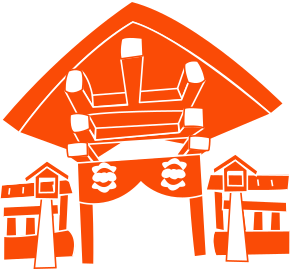

協議会関連
活動内容
Work

私たちは、一部の人の意見だけではなく、「みんなの声」からまちの未来を
つくっていきたいと考えています。
多くの住民の方にアンケートをお願いし、集まったたくさんの思いは、
ビジョンマップという形にまとめ、何度も話し合いながら、よりよいまちづくりの土台にしています。
「住みやすくて、ちょっとワクワクするまちにしたい」
——そんな想いを実現するには、もっと多くの人の声が必要です。
高齢者だけでなく、若い人たちや子どもたち、商店街から少し離れた地域の人にも届くよう、
これからも声を集め、つなぎ、広げていきます。
アンケート
questionnaire
お祭りなどのイベントの際に、
参加された方へアンケートを実施しています。
街への思いや、地域の課題・希望を整理し、
今後の街づくりの参考にしています。
定期的な会議
meeting
定期的に会議をおこない、今後の活動内容やまちの住民の声を
どう実現していくかを話し合います。
「こんなアイデアはどう？」「これは実現できそう？」
と、メンバー同士が意見を出し合いながら、
まちの理想を少しずつ形にしています。

ビジョンマップ作成とは、
街がこれから目指していく理想の姿を話し合いながら整理し、一枚の図や表にまとめることです。
地域の魅力や課題、
将来やりたいことを見える形にすることで、住んでいる人やお店、行政が共通の目標を持ちやすくなります。
このマップをもとに、イベントやまちづくりの計画を考えたり、
地域のつながりを深めるきっかけを作ったりすることができます。
ビジョンマップ
vision map
一部の人だけで決めるのではなく、地域のみなさんの声を
集めながら、少人数で何度も話し合いを重ねて作っています。
お祭りや清掃活動などで集めたアンケートをもとに、
まちの未来の姿を図にまとめていきます。
ブラダバシ
buradabashi「ブラダバシ」は、地域の歴史や見どころを学芸員さんと一緒に歩いてめぐるまち歩きイベントです。
ただ歩くだけでなく、まちの成り立ちや昔の様子を知ることで、 地域への理解や愛着が深まります。
地域をきれいにする清掃活動や、住民の声を集めるワークショップを通して、
私たちは「住みやすく、誇れるまち」を目指しています。
小さな一歩の積み重ねが、まちの未来を少しずつ動かしています。
世代や立場をこえて協力し合いながら、課題と向き合い、希望を描く。
そんな取り組みが、今、このまちに少しずつ広がり始めています。
清掃活動
clean-up
地域の清掃活動は、堀川周辺や商店街の道路を中心に、
定期的に実施しています。地域の子どもたちや商店街の方々、
中学生との連携も進み、世代をこえてまちをきれいにする
機会となっています。
ワークショップ
workshopお祭りなどのイベントの際に,参加された方へアンケートを実施しています. 街への思いや,地域の課題・希望を整理し,今後の街づくりの参考にしています。
協議会は一緒に街を盛り上げてくれるメンバーを募集しています！
よくある質問
協議会に年齢制限はありますか？
ここは、1つ目のアコーディオンの中身です。
ここは、1つ目のアコーディオンの中身です。
ここは、1つ目のアコーディオンの中身です。
友達と参加しても良いですか？
ここは、2つ目のアコーディオンの中身です。
ここは、2つ目のアコーディオンの中身です。
ここは、2つ目のアコーディオンの中身です。
見学は可能ですか？
ここは、3つ目のアコーディオンの中身です。
ここは、3つ目のアコーディオンの中身です。
ここは、3つ目のアコーディオンの中身です。
協議会に年齢制限はありますか？
ここは、4つ目のアコーディオンの中身です。
ここは、4つ目のアコーディオンの中身です。
ここは、4つ目のアコーディオンの中身です。
協議会に年齢制限はありますか？
ここは、5つ目のアコーディオンの中身です。
ここは、5つ目のアコーディオンの中身です。
ここは、5つ目のアコーディオンの中身です。